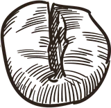
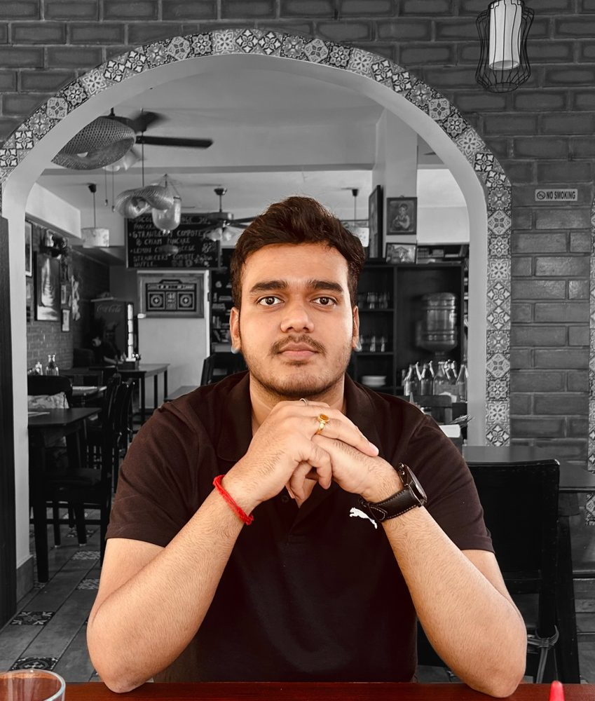
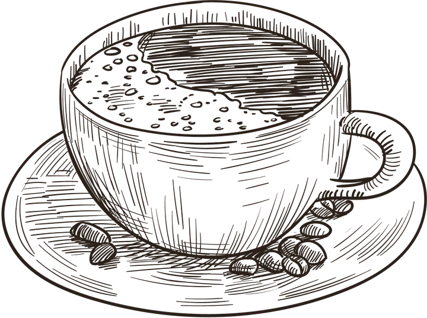
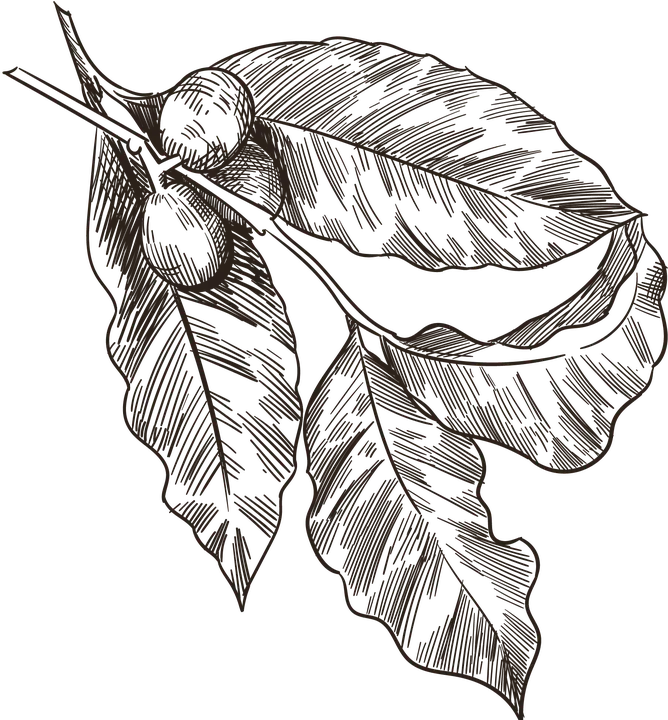
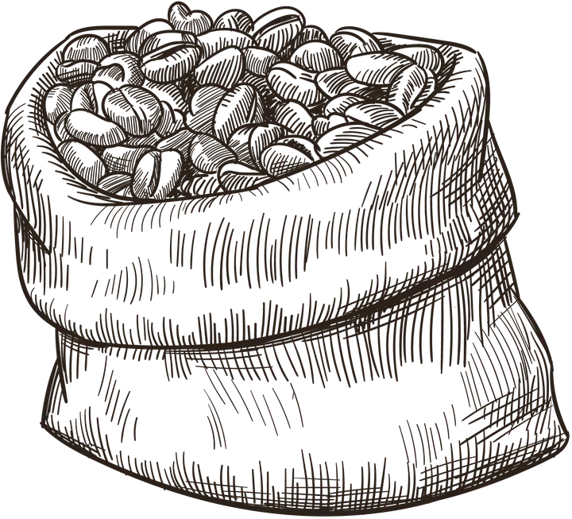
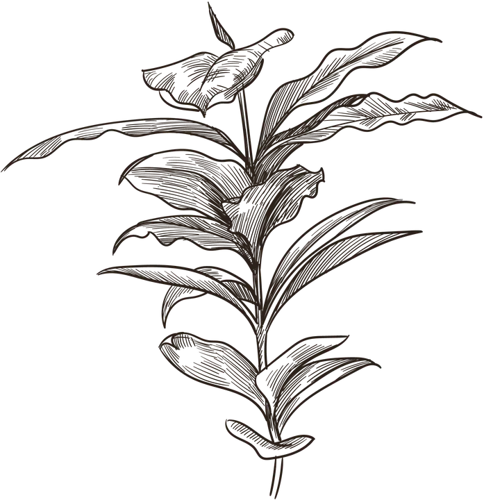
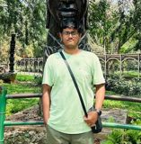
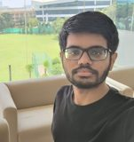
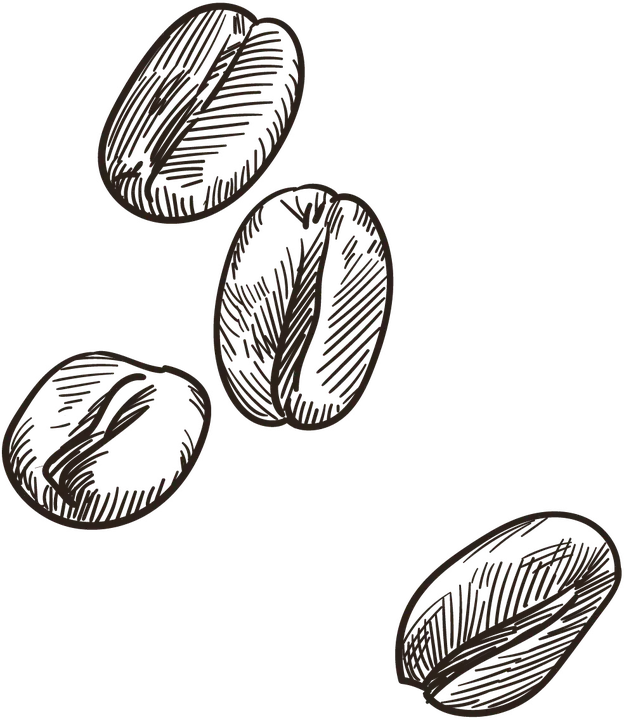
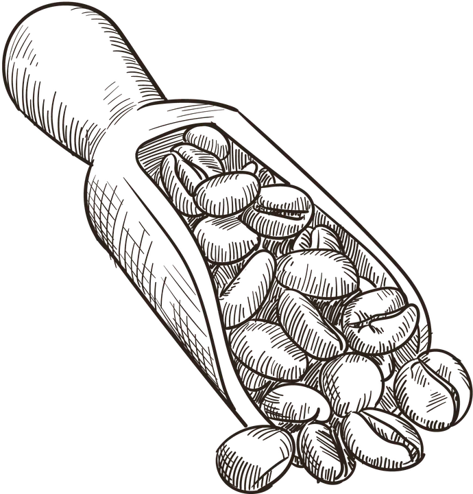

Product case study
Unnati
Used NABARD and TRAI data to show why rural India can use fintech but isn't adopting it, then wrote a full PRD with an agent-led go-to-market plan.
Read the case studyProduct manager, Pune, India
I turn messy, data-heavy problems into B2B products that customers pay for.
Until October 2026 I was the only product manager at Karbunwise, a climate-tech startup. Before moving into product I spent two years building machine-learning models, so I work closely with engineers and read the data myself.

Scroll to continue

About
I studied AI and data science, built ML models for two years, then moved into product. That path shapes how I run a product.
The best ideas I've shipped came from conversations: stakeholder interviews at RN Architects, and 100+ buyer conversations at industry events for Karbunwise.
My ML background means I can scope technical work with engineers, question a model's output, and rebuild one when it isn't good enough.
I judge a launch by what it changed: revenue, accuracy, time saved, new leads. Every result on this page has a number behind it.

Experience
The only PM at a climate-tech startup that helps companies measure their carbon footprint. I owned discovery, the roadmap and go-to-market, working with a team of five developers.
Led an end-to-end rebuild of the core product after clients reported calculation errors. Complaints stopped and new enterprise clients signed in the UAE, India and the UK.
Found an EU compliance need in conversations with manufacturers, sized the market and shipped the product from zero. Two more clients were on trial.
Rebuilt the ML engine that maps client data. Onboarding went from 3–4 days of manual work to under one.
Built seven self-serve calculators, the company's first inbound channel, bringing in 3–5 demo requests a month.

Experience
Two years building machine-learning models for real clients, which is where I learned to start from the problem rather than the model.
Jul 2024 – Jul 2025
AI Engineer
Found through stakeholder interviews that cost estimation was the top client pain point, then built a forecasting model 20% more accurate than manual estimates. Ran the buy-vs-build analysis on AI design tools and built a lightweight CRM.
Dec 2023 – Apr 2024
Machine Learning Intern
Shipped a client-segmentation model with 88.5% accuracy (F1 0.84) after solving a severe class-imbalance problem. Worked remotely with a US team.
Dec 2023 – Apr 2024
In-house AI Intern
Our remote campus had no 24/7 medical help, so our team built and deployed a medical-assistant chatbot on a fine-tuned open-source LLM.
Independent work
Case studies and analysis I did on my own time.
Product case study
Used NABARD and TRAI data to show why rural India can use fintech but isn't adopting it, then wrote a full PRD with an agent-led go-to-market plan.
Read the case studyArticle on Medium
What's behind the surge in quality complaints in quick commerce, and how support workflows and app design could fix it.
Read the articleFintech product, registered design
An investment-awareness product, shortlisted for the final round of the government's YUKTI programme. Co-registrant on its Indian registered design (No. 396590-001).
See the projectAnalytics
Surveys, interviews and inferential statistics to find where the campus café was losing money. The changes that followed raised revenue by 15%.
Read the reportEducation and leadership
I've been starting things since college, from a student entrepreneurship cell to an NGO.
Outside work I write poetry (two poems published in my institute's magazine, Eunoia) and read about decision-making and investing.

In their words
What people I've worked with say.
“From the start, he brought energy, structure and a clear vision to the table. He's someone who not only talks about innovation but also follows through with action.”
“He was great at simplifying complex problems. What stood out the most was his ability to listen, offer clear feedback and make sure we were always moving forward as a team.”

“Aditya has a strong work ethic and is an excellent teammate. Beyond just getting the job done, he has always been proactive and pushed for innovation and excellence.”

“What truly sets him apart is his ability to inspire those around him to join in his pursuit of excellence, where collective growth is prioritized.”

Contact
I'm looking for a product manager role on a team that ships. Tell me what you're building. If you're in Pune, the coffee is on me.
adityashinde4760@gmail.com
